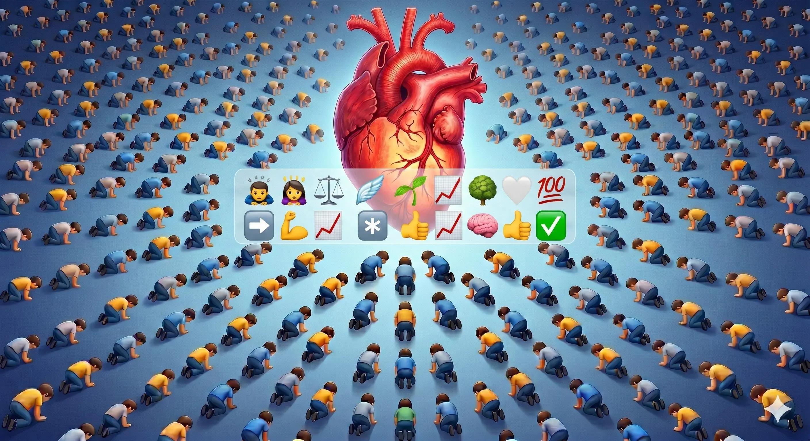
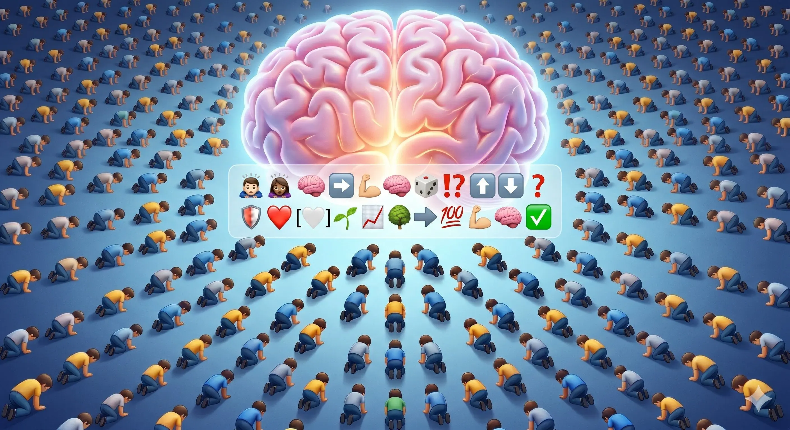

Heart Dot Right
A giant heart sits at the center while people kneel in repeating rows. The emoji line mixes care, balance, growth, progress, and approval, framing emotion as a force that can organize collective behavior.
This page contains only two symbolic images. Both scenes show a crowd kneeling before one dominant organ and an emoji strip that reads like a compressed manifesto.

A giant heart sits at the center while people kneel in repeating rows. The emoji line mixes care, balance, growth, progress, and approval, framing emotion as a force that can organize collective behavior.

A glowing brain replaces the heart as the center of authority. The emoji strip adds direction arrows, strength, conflict marks, and success symbols, suggesting reason and power competing for dominance and legitimacy.